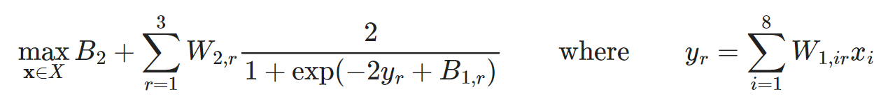

Simple Example
This example is also provided here as a Jupyter Notebook.
In [1,2], a surrogate ANN model of bioreactor productivity was constructed by fitting results from computationally expensive CFD simulations. The authors then optimized this surrogate model to obtain ideal processing conditions. The optimization problem is given by:

Input Parameters
In the first block, we input parameters values supplied in the paper for $W_1$, $W_2$, $B_1$, and $B_2$ into Julia as simple array objects. We also input bounds for the variables which are used to scale the values obtained from optimization from [-1, 1] back into the design values.
using JuMP, EAGO
# Weights associated with the hidden layer
W1 = [ 0.54 -1.97 0.09 -2.14 1.01 -0.58 0.45 0.26;
-0.81 -0.74 0.63 -1.60 -0.56 -1.05 1.23 0.93;
-0.11 -0.38 -1.19 0.43 1.21 2.78 -0.06 0.40]
# Weights associated with the output layer
W2 = [-0.91 0.11 0.52]
# Bias associated with the hidden layer
B1 = [-2.698 0.012 2.926]
# Bias associated with the output layer
B2 = -0.46
# Variable bounds (Used to scale variables after optimization)
xLBD = [0.623, 0.093, 0.259, 6.56, 1114, 0.013, 0.127, 0.004]
xUBD = [5.89, 0.5, 1.0, 90, 25000, 0.149, 0.889, 0.049];Construct the JuMP Model and Optimize
We now formulate the problem using standard JuMP [3] syntax and optimize it. Note that we are forming an NLexpression object to handle the summation term to keep the code visually simple, but this could be placed directly in the JuMP @NLobjective expression instead.
# Model construction
model = Model(optimizer_with_attributes(EAGO.Optimizer, "absolute_tolerance" => 0.001))
@variable(model, -1.0 <= x[i=1:8] <= 1.0)
@NLexpression(model, y[r=1:3], sum(W1[r,i]*x[i] for i in 1:8))
@NLobjective(model, Max, B2 + sum(W2[r]*(2/(1+exp(-2*y[r]+B1[r]))) for r=1:3))
# Solve the model
optimize!(model)Retrieve Results
We then recover the objective value, the solution value, and termination status codes using standard JuMP syntax. The optimal value and solution values are then rescaled using the variable bounds to obtain their physical interpretations.
# Access calculated values
fval = JuMP.objective_value(model)
xsol = JuMP.value.(x)
status_term = JuMP.termination_status(model)
status_prim = JuMP.primal_status(model)
println("EAGO terminated with a status of $status_term and a result code of $status_prim.")
println("The optimal value is: $(round(fval,digits=5)).")
println("The solution found is $(round.(xsol,digits=3)).")
println("")
# Rescale values back to physical space
rescaled_fval = ((fval+1)/2)*0.07
rescaled_xsol = ((xsol.+1.0)./2).*(xUBD-xLBD).+xLBD
println("Rescaled optimal value and solution values:")
println("The rescaled optimal value is: $(round(rescaled_fval,digits=4))")
println("The rescaled solution is $(round.(rescaled_xsol,digits=3)).")References
- J. D. Smith, A. A. Neto, S. Cremaschi, and D. W. Crunkleton, CFD-based optimization of a flooded bed algae bioreactor, Industrial & Engineering Chemistry Research, 52 (2012), pp. 7181–7188.
- A. M. Schweidtmann and A. Mitsos. Global Deterministic Optimization with Artificial Neural Networks Embedded https://arxiv.org/pdf/1801.07114.pdf.
- Iain Dunning and Joey Huchette and Miles Lubin. JuMP: A Modeling Language for Mathematical Optimization, SIAM Review, 59 (2017), pp. 295-320.